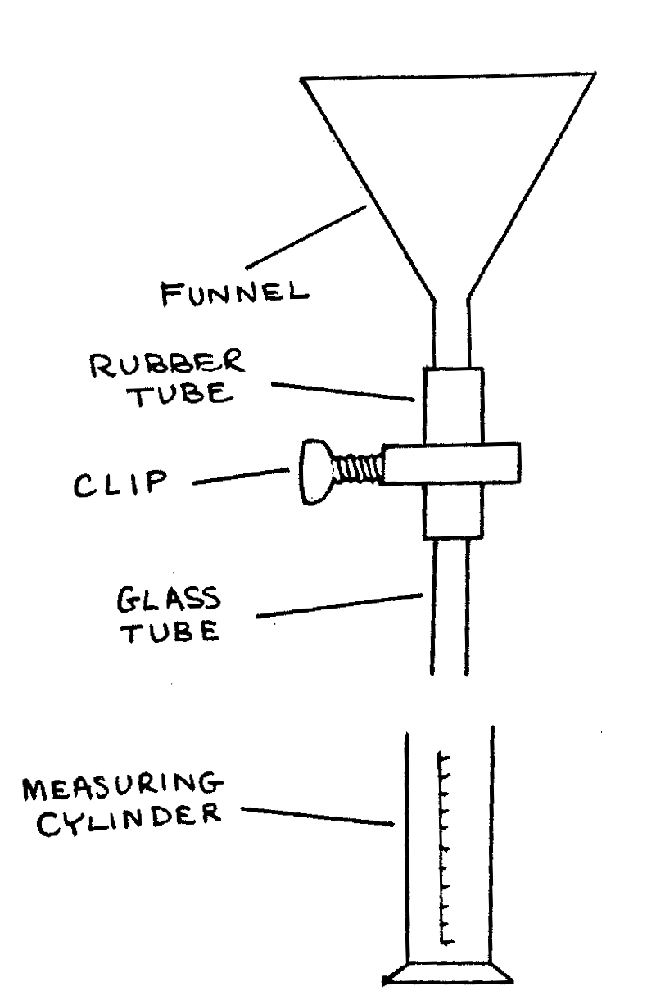

77 ALT A-Q2: Surface Tensions by Rayleigh’s Formula.¶
Time \(1 \frac{1}{2}\) hr.
Apparatus¶
Beaker of liquid A; beaker of liquid B; stand and clamp; funnel; rubber tube; clip; glass tube; measuring cylinder; graph paper; stopclock; small empty beaker; beam balance.

You are required to determine the surface tensions \(\gamma_a\) of liquid A and \(\gamma_b\) of liquid B. Proceed as follows:
Set up the apparatus shown above. With the clip closed, fill the funnel with the liquid A. Adjust the gripping of the clip so that the rate of the drops at the lower open end is initially between 20 and 30 drops per minute. When making the adjustments, the drops may be collected in the measuring cylinder.
Starting with a convenient reading \(V_0\) of the volume of liquid already collected in the measuring cylinder, observe the new volume \(V\) of the liquid in the measuring cylinder when a known number \(n\) of drops have been collected. Without losing the ongoing count of \(n\), observe six series of pairs of \(V\) and \(n\). Tabulate your observations. (6 marks)
Plot a graph of \(V - V_0\) (vertical axis) against \(n\) (horizontal aXis). (18 marks)
Assuming that the drops are spherical, determine from the resulting graph the diameter \(d\) and the mass \(m_a\) of one drop. Hence using Lord Rayleigh’s formula:
where g is the acceleration due to gravity, which may be taken as 9.8 ms\(^{-2}\), calculate \(\gamma_a\). You may assume that the density of the liquid A is 1.0g cm\(^{-3}\). (10 marks)
Now empty the entire apparatus and refill it with the liquid B. Adjust the rate of flow as before. Collect 20 drops of the liquid B into the small beaker which you should first weigh empty. Reweigh the beaker and contents so as to obtain the mass of 20 drops of the liquid. From your observations, determine the mass m\(_b\) of one drop. (6 marks)
Calculate the surface tension of the liquid B given, as before,
where g and \(d\) have the same values as above. (10 marks)